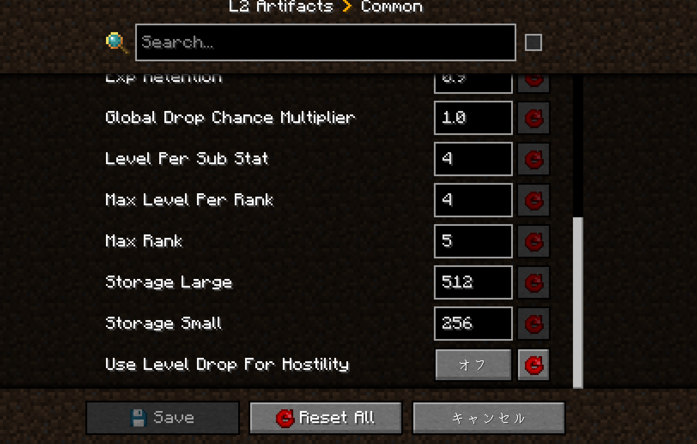

コンフィグ変更とは
マイクラにはmodごとに、コンフィグというmodのシステムを変更できるものがあります
Kenma データパックを適応するためにそれを変更してください
手順
- configured modをインストールしていることが前提です
まずマイクラのホーム画面を開き、MODのタブから指定するmodの欄をクリックし、設定タブを開きます
ワールド選択欄が出るなら変更したいワールドを選び、こちらが指定するところを変更してもらいます
L2artifacts
- 敵が聖遺物を落とす条件がレベル依存から体力依存になり、聖遺物をゲットしやすくなります

← トップページに戻る